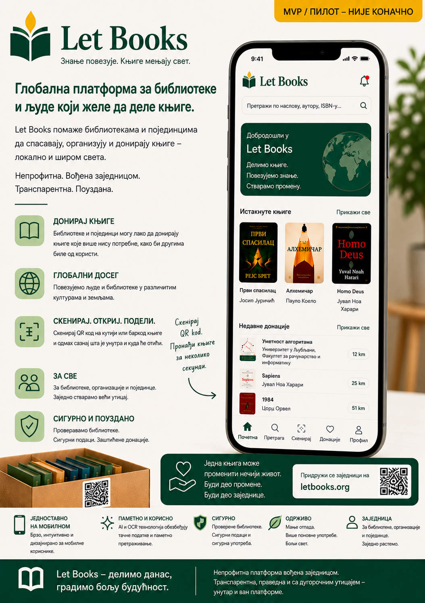

Напомена о раној алфа фази
Документација, макете и описани токови рада још су у раној алфа фази. Садржај је AI-потпомогнут и може садржати нетачности, привремене детаље или будуће правце развоја.
Let Books помаже људима, библиотекама и будућим организацијама домаћинима да попишу вредне књиге, прегледају донације и касније пронађу тачно оне примерке који су тражени.

Документација, макете и описани токови рада још су у раној алфа фази. Садржај је AI-потпомогнут и може садржати нетачности, привремене детаље или будуће правце развоја.
Један наслов може имати више физичких примерака, сваки са својим стањем, локацијом и исходом донације.
Скенирајте кутију, видите садржај, брзо додајте књиге и касније припремите преузимање без нагађања.
Извезите листу, прикупите одлуке жели или можда, вратите их назад и направите листу преузимања по локацијама.
Први успешан ток рада мора бити практичан, мобилан и употребљив чак и без дубљих интеграција.
Одмах отворите тачну локацију на којој радите.
Фотографишите насловницу и по могућству скенирајте ISBN.
Соба, полица и кутија остају везане за сваки примерак.
Припремите структурисану листу за библиотеку или партнера.
Вратите статусе жели, можда и не жели без нагађања по наслову.
Тражене књиге групишу се по стварним локацијама.
Прочитајте најновији чланак: ISBN није база података.